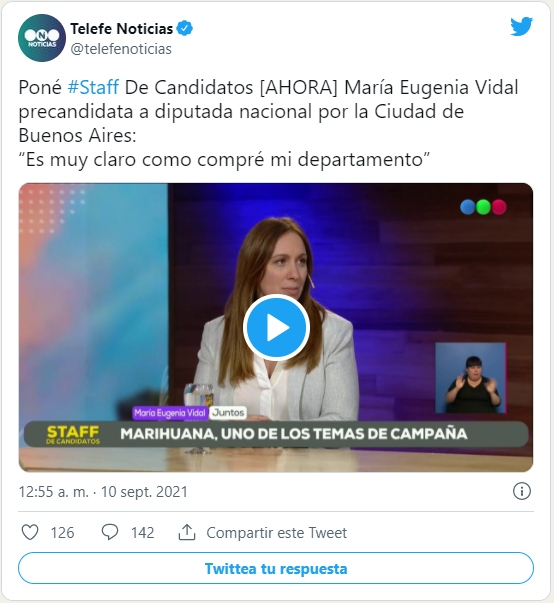

Diseño, Alejandro Ros. Animación, Silvia Canosa
Tanto el oficialismo como la oposición procuran transmitir con claridad qué se pone en juego en las elecciones legislativas de noviembre, que tendrán un anticipo con las primarias abiertas, simultáneas y obligatorias de hoy. Llamativa coincidencia: el jueves, en los actos de cierre, las principales coaliciones señalaron que se enfrentarán dos modelos de país, y cada una intentó describirlos.
Horacio Rodríguez Larreta trocó los globos y el amarillo de Macrì, quien no asistió al acto en La Plata, por las gorritas rojas con el nombre de su candidato bonaerense, El Colo Diego Santilli, a quien aún le cuesta asimilar que ya no sigue en la Ciudad Autónoma. No fue la única transmutación: el fondo musical, además de los cantitos futboleros del tipo “El domingo, cueste lo que cueste, el domingo tenemos que ganar”, fue el himno kirchnerista “A volver, a volver, vamos a volver”, como quien frota un talismán. Pero, mientras en Tecnópolis Alberto y Cristina hablaron de producción, trabajo y salud, el cierre de Juntos llegó al climax en torno del punitivismo: reforma de las leyes para endurecer penas y ablandar garantías procesales. Unos ofrecieron empleo y acuerdo político para enfrentar la megadeuda con el FMI, los otros, cárcel a los excluidos que entran en conflicto con la ley penal.
Gorritas rojas en lugar de globos amarillos: todo un cambio.
Muchos conciben esta prueba de fuerza como una escala en la marcha hacia 2023, cuando se renueve el Poder Ejecutivo, pero la experiencia de la última década relativiza esa idea. Quien más arriesga en esta compulsa es Rodríguez Larreta, cuya proyección quedaría golpeada si su candidato perdiera en la interna ante un novato.
Pero Cristina fue reelecta con el 54% de los votos en 2011, dos años después del contratiempo que implicó la derrota en las elecciones legislativas bonaerenses de 2009 de una lista que encabezaban nada menos que Néstor Kirchner, Daniel Scioli y Sergio Massa, ante un empresario sin experiencia política, del que no volvió a hablarse desde entonces. Por las dudas, se llamaba Francisco de Narváez Steuer y le decían, como a Santilli y por las mismas razones, Colorado. ¿Alguien lo recuerda?
No confundir con el escultor español Francisco Narváez.
Massa, separado del kirchnerismo, batió a Martín Insaurralde en las legislativas de 2013 y se sintió a dos pasos del paraíso, pero en 2015 quedó tercero cómodo en la carrera presidencial. Ese año se impuso la alianza liberal-radical y volvió a hacerlo en la elección de medio término de 2017. Cristina cayó entonces frente al insubstancial Esteban Bullrich, pero el 37% que logró la constituyó en la gran electora del peronismo, y en 2019 Maurizio Macrì fue el primer presidente postdictatorial que intentó ser reelecto y no lo consiguió. Es decir que ni hoy ni en noviembre se decide quién ejercerá el gobierno a partir de 2023.
Por eso, más allá del apetito de quienes piensan en la cena a la hora del desayuno, lo único que se juega en los próximos comicios es la representación legislativa de cada fuerza. La influencia que esto vaya a tener luego en el bienio previo a la renovación del Poder Ejecutivo también es opinable. Con la mayoría legislativa obtenida en 2009, el Grupo Ahhh, conducido con pasión querulante por Patricia Bullrich, bloqueó todas y cada una de las iniciativas del gobierno, hasta la ley de presupuesto. Incluso, obligó a Cristina a vetar una ley que establecía el 82% móvil para los jubilados, pero ese camino condujo a la mayor derrota de esa alianza en las presidenciales siguientes.
La postulación más estridente en esta campaña es la que pretende que el país está a siete bancas de convertirse en Venezuela, que serían las que le faltan al gobierno para contar con mayoría propia en ambas cámaras del Congreso. Frenar al gobierno, controlarlo, son versiones más racionales del mismo discurso. La campaña oficialista plantea la necesidad de consolidar una mayoría legislativa que permita llevar a cabo reformas estructurales necesarias. Buscan controlar la Justicia para lograr la impunidad en las causas por corrupción, replican desde el otro bando.
El único punto en el que coinciden todos los encuestadores es que la población no tiene ganas de responder a encuestas. Las telefónicas son así más imprecisas que nunca y las presenciales más caras de lo que es posible pagarlas. Armar la muestra, que debe ser representativa de la composición de la población objeto, deviene una tarea de Sísifo. La interpretación generalizada es que esto refleja un rechazo a la política y los políticos (¿por qué no a los encuestadores?). El resultado evidente es la dispersión de los pronósticos. Tanto en la elección nacional como en la de la provincia de Buenos Aires hay sondeos para todos los gustos, por lo que carece de sentido tomarlos como punto de referencia. Nunca se voló con tanta incertidumbre como ahora y cada fuerza canta victoria antes de tiempo, para darse ánimo.
Hay otras formas de aproximarse a los posibles resultados de hoy, que, además, no necesariamente se repetirán en noviembre. Ya se ha visto en Santa Fe, donde luego de unas PASO muy contenciosas, los vencidos en la interna no apoyaron al vencedor en la general. Por ejemplo:
La única excepción fue la Primera Alianza, en octubre de 2001, lo cual precipitó la crisis terminal de la presidencia de Fernando De la Rúa. Estas fueron circunstancias muy especiales, tanto políticas como económicas:
La enumeración es extensa, pero útil para señalar los desastres que no ocurren hoy. Aunque Alberto cite a Raúl Alfonsín, y Cantinflas diga que al final votás a un radical, el gobierno es peronista y eso marca una diferencia inocultable.
El actual oficialismo ha tenido la virtud de conceptualizar el problema judicial, aunque no es seguro que las propuestas para superarlo puedan cumplir esa función, ni las de Alberto ni las de Cristina. Lo ocurrido en 2013 es elocuente. El proyecto de “democratización de la justicia” fue esterilizado por decisiones administrativas de la República Autónoma del Cuarto Piso. Tampoco es posible saber cuál sería el efecto de las reformas intentadas, porque entre bloqueos legislativos, medidas cautelares del Estado Libre Asociado de Comodoro Py y resoluciones de la Banda de los Cinco que gobierna el Palacio de los Tribunales, no han podido ponerse en práctica.
Así descripta, esta pulseada no guarda relación con las preocupaciones populares, parecen cuestiones de élites y de minorías intensas, que disputan poder en las alturas, muy lejos de las personas comunes. Esto es así sólo en apariencia, porque en realidad afecta a toda la sociedad: según quienes sean los jueces y las juezas en funciones, será viable o no un programa de gobierno, quienquiera que ocupe el Poder Ejecutivo.
Por eso Menem, que entendía el poder como pocos, rehusó el acuerdo que le propuso Alfonsín para aumentar el número de miembros de la Corte Suprema de 5 a 7 y nominar uno cada uno, y en cuanto la relación de fuerzas se lo permitió la llevó a nueve y designó a cuatro propios, como repitió en 2016 el carcelero de Milagro Sala en Jujuy.
En los tramos finales de la campaña, ante el temor a la fuga de votos por derecha, Horacio Rodríguez Larreta abandonó su compostura y propuso suprimir la protección legal al empleo, favoreciendo los despidos, en lo cual lo siguió de inmediato su competidor interno, Facundo Manes, en una ostensible demostración de homogeneidad interna. Pero si alguno de ellos llegara a ocupar el cargo desde el cual fuera posible implementarlo, la compatibilidad de esa ley o decreto con la Constitución Nacional, que desde 1957 ordena la protección contra el despido arbitrario, se resolvería en los tribunales. Es demasiado optimista Cristina, al imaginar que esa poda obligaría a reformar la Constitución. Basta con interpretarla al gusto del poder político, que en esa hipótesis coincidiría con el poder económico, es decir, la unión de lo útil con lo agradable. El problema no lo tienen Larreta ni Manes.
Los jueces también tendrían la última palabra si se debatiera la adquisición de las viviendas de Santilli y de María Eugenia Vidal, escrituradas muy por debajo de su valor de mercado y gracias a préstamos recibidos de proveedores del Estado o familiares de funcionarios.
Esta es la tercera nota donde El Cohete aborda el tema, luego de las publicadas el 28 de agosto y el 5 de septiembre .
En cada entrega se sumaron datos a medida que avanzaba la investigación, que no despertó el interés de ningún otro medio. A lo sumo, unos pocos se hicieron eco del despecho de la heredera despojada Esmeralda Mitre, quien preguntó cómo hizo María Eugenia Vidal para pasar en tres años de una vivienda en Morón a un piso en la zona más cara de la Capital, donde ella misma habita. Ni siquiera se preocuparon por verificar la exactitud de sus dichos: según Mitre, la propiedad del Hada Buena está ubicada en La Isla de Recoleta, el tramo que va de Las Heras a Libertador, entre Agüero y la avenida Pueyrredón. En realidad, Vidal vive sobre la mano impar de Pueyrredón, en el número 2421, y su piso da espaldas al cementerio epónimo, sobre Azcuénaga. No es una zona barata, pero tampoco es La Isla, donde tienen asiento el Ministerio de Seguridad y la embajada británica, y en todo caso está fuera de escala con los recursos de quien desde hace dos décadas se desempeña en cargos estatales.
En pocos medios, Vidal fue interrogada sobre el tema y en ninguno su respuesta tuvo réplica. En la señal de noticias de La Nación, donde Esmeralda Mitre afirma que la línea editorial la fija Maurizio Macrì, Eduardo Feinmann le preguntó si había leído la última nota del Cohete.
En América 24, el relator de partidos de fútbol Alejandro Fantino se atribuyó ser periodista y con medrosos circunloquios envió un centro a la cabeza de Vidal.
—A veces no se preguntan cosas, por miedo a que les caigan mal, y se pierden ustedes de responder o simplemente de decir no quiero hablar del tema. Vos has vivido 132.000 campañas sucias, ataques [mirando a Vidal], como vos también [dirigiéndose a Rodríguez Larreta], como todos los que estamos acá. ¿Tenés algo para contarle a la audiencia, a la gente, sobre lo que empezó a girar en los últimos días sobre un departamento, que pediste un préstamo? Te lo pregunto por si tenés ganas de decir mirando a cámara…o si simplemente decir es tan oscuro que no quiero entrar, me da… No entro ahí.
La contestación fue casi idéntica y en ningún caso hubo repreguntas. Según Vidal, no le llama la atención que en vísperas de las PASO se ponga en duda la compra de un departamento que “declaré públicamente hace dos años, antes de irme de la gobernación. Está en mi declaración jurada, pública”. Dijo que ella misma creó, primero por decreto y luego por ley, la declaración obligatoria de cierre de los funcionarios. En la suya, “queda claro que ese departamento en el que vivo hoy fue comprado con la venta de la mitad de mi casa anterior y del auto que teníamos cuando me divorcié, y ese era todo mi patrimonio, y una hipoteca a diez años. Está todo en una declaración que cualquier ciudadano puede pedir, y yo la pongo a disposición de tu producción y de cualquiera. Que investiguen lo que quieran. Yo siempre fui la misma y siempre pude explicar cómo vivía”.
Por supuesto, el relator que dejó los partidos de fútbol por las campañas de desinformación de los servicios de inteligencia, agradeció la respuesta engañosa y no pidió la declaración que Vidal dijo ofrecerle. Es decir que los datos no son públicos y la candidata no los pone al alcance de quien desea verificarlos.
Vidal fue algo más precisa, luego de que CFK mencionara la operación inmobiliaria en el acto del cierre del FdT en Tecnópolis, e ironizara que Vidal merecería ser designada Ministra de Hábitat. Podés verla aquí:
“Cristina tomó en su discurso lo que escribió Verbitsky. Una vez más el kirchnerismo unos días antes de la elección hace una denuncia electoral sobre un candidato de la oposición, en este caso pone en duda lo único que yo tengo, que es mi casa. No tengo otros bienes. Ese departamento lo compré hace dos años y está en mi declaración jurada pública. No tengo problema en explicar cómo es ese departamento, ni cómo lo compré: es el resultado del trabajo de toda mi vida. Vendí mi casa anterior cuando me divorcié y me quedé con la mitad, al igual que la mitad del auto. Ese fondo lo usé para pagar la mitad del departamento en el que vivo y la otra mitad con un crédito que saqué a diez años para pagar en cuotas”, dijo en la radio Rivadavia, otra de las bocas de expendio de Macrì.
Con mayor o menor detalle, en cada caso su explicación fue la misma. Lo cual no significa que sea verdadera. Veamos.
Su declaración jurada del 27 de agosto de 2019 consigna un depósito bancario por 5.055.506 pesos, originado en venta de activos, se supone que el medio departamento al que se refirió Vidal. La cotización del dólar oficial de ese día era de 58,66 pesos para la venta. Es decir que recibió el equivalente a 86.100 dólares. Además declaró dos depósitos bancarios, uno en dólares y otro en pesos, 11.600 dólares entre ambos, que podrían originarse en la venta del medio auto. También declaró deudas personales por 304.000 pesos, equivalentes a 5.200 dólares. Sumando y restando, en ese momento poseía 92.500 dólares.
La declaración jurada de cese, del 9 de diciembre de 2019, dice que es titular del 100% de un departamento en la Ciudad Autónoma, que compró con “ingresos propios” y que tiene una deuda hipotecaria por 12.600.000 pesos. También declaró un depósito en dólares de 843.753 pesos, que a esa fecha equivalían a 14.455 dólares.
Pero según la escritura que consta en el registro de la propiedad inmueble, el 4 de septiembre de 2019, Vidal compró el piso de la Avenida Pueyrredón 2421 por 340.000 dólares, equivalentes ese día a 19.883.200 de pesos. Entregó 140.000 dólares (equivalentes a 8.187.200 pesos) y contó con un préstamo hipotecario por 200.000 dólares (equivalentes a 11.696.000 pesos), a pagar en 120 cuotas.
Esto ya motiva varias observaciones:
Pero hay muchas otras cuestiones, que no surgen de la declaración jurada;
¿A dónde te lleva?
La expresión de virtud ofendida sólo alcanza ante interrogadores complacientes. Es cierto que la ley 15.000, sancionada durante su gobernación, obliga a la declaración de cese, al concluir un mandato. Pero no que sea pública, que esté al alcance de cualquier ciudadano y que su autora la ponga a disposición de quien quiera investigar.
Lo que puede consultarse en la página electrónica del Ministerio de Justicia y Derechos Humanos es una síntesis somera, donde no consta ni la ubicación del inmueble ni la identidad de quien lo vendió ni las condiciones de la operación. Los datos concretos están encriptados en una dependencia del Ministerio. Cuando El Cohete solicitó los de Vidal, el ministro Julio Alak remitió a la Subsecretaria de Transparencia Institucional, Ana Laura Ramos, quien respondió que sólo pueden entregarse por orden de un juez. Y la ex gobernadora rehusó un pedido de entrevista con El Cohete.
Otro tanto hizo Santilli, quien le compró su piso frente al Malba al ex ministro de Menem Rodolfo Barra, con un préstamo de 550.000 dólares de otro proveedor de medicamentos, Marcos Podestá, de la Droguería Varadero, deuda declarada en 2015 y desaparecida en 2016. Lo escrituró por 800.000 dólares, cuando otro igual en el mismo edificio se ofreció por 1,4 millones, que bajaron a 1,2 luego de la primera publicación del Cohete.
La única manera de conocer todos los detalles es que alguien denuncie ambos casos y que los tribunales completen la investigación, con acceso a aquello que los candidatos ocultan.
¿Te parece que ocurrirá?